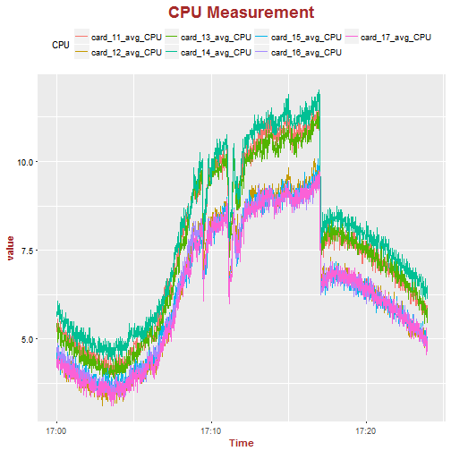
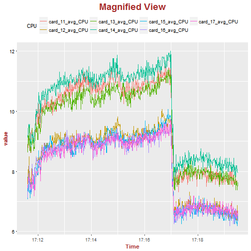

- This web app was developed using R Shiny package and hosted online on shinyapps.io.
- To get access to the web app, please visit the following: https://philipto.shinyapps.io/hw4_app/
Philip To
(1) Change the title of the chart;
(2) Select which card to plot the CPU measurements;
(3) Change the position of the legend;
(4) Zoom into selected data points for better view.
(5) Computes the average CPU measurement for the selected data range.
This is an example of static chart. It does not provide any interactivity. The usefulness of such chart is very limited.

